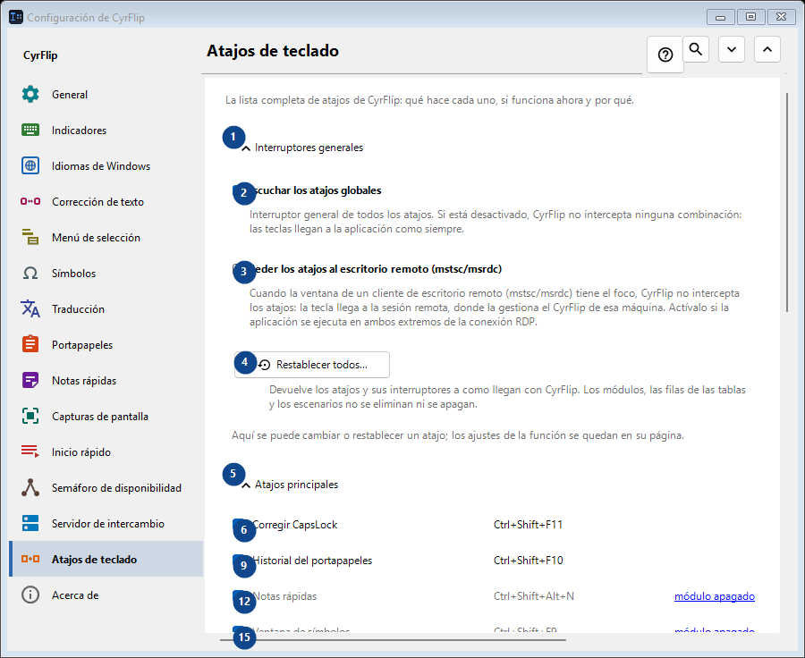
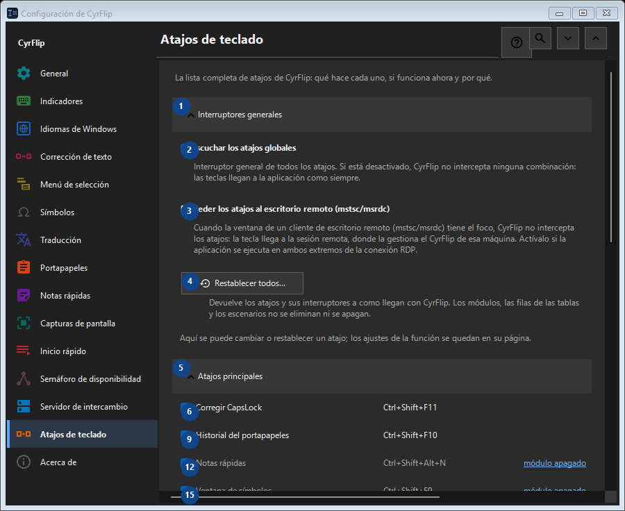

Atajos de teclado
Para qué sirve
La lista completa de atajos de CyrFlip: qué hace cada uno, si funciona ahora y por qué.


Orden de uso
Los ajustes se aplican de inmediato. No hay un orden obligatorio; usa los grupos siguientes.
Elementos
1. Interruptores generales
Usa este comando para la acción indicada. Lee cualquier confirmación antes de aceptarla.
Tus atajos2. Escuchar los atajos globales
Interruptor general de todos los atajos. Si está desactivado, CyrFlip no intercepta ninguna combinación: las teclas llegan a la aplicación como siempre.
Tus atajos3. Ceder los atajos al escritorio remoto (mstsc/msrdc)
Cuando la ventana de un cliente de escritorio remoto (mstsc/msrdc) tiene el foco, CyrFlip no intercepta los atajos: la tecla llega a la sesión remota, donde la gestiona el CyrFlip de esa máquina. Actívalo si la aplicación se ejecuta en ambos extremos de la conexión RDP.
Tus atajos4. Restablecer todos...
Devuelve los atajos y sus interruptores a como llegan con CyrFlip. Los módulos, las filas de las tablas y los escenarios no se eliminan ni se apagan.
Tus atajos5. Atajos principales
Usa este comando para la acción indicada. Lee cualquier confirmación antes de aceptarla.
Tus atajos6. Corregir CapsLock Ctrl+Shift+F11
Usa este comando para la acción indicada. Lee cualquier confirmación antes de aceptarla.
Tus atajos7. Cambiar... - Corregir CapsLock Ctrl+Shift+F11
Usa este comando para la acción indicada. Lee cualquier confirmación antes de aceptarla.
Tus atajos8. Predeterminada - Corregir CapsLock Ctrl+Shift+F11
Usa este comando para la acción indicada. Lee cualquier confirmación antes de aceptarla. Este elemento no está disponible. Activa primero la función o selecciona una entrada.
Tus atajos9. Historial del portapapeles Ctrl+Shift+F10
Usa este comando para la acción indicada. Lee cualquier confirmación antes de aceptarla.
Tus atajos10. Cambiar... - Historial del portapapeles Ctrl+Shift+F10
Usa este comando para la acción indicada. Lee cualquier confirmación antes de aceptarla.
Tus atajos11. Predeterminada - Historial del portapapeles Ctrl+Shift+F10
Usa este comando para la acción indicada. Lee cualquier confirmación antes de aceptarla. Este elemento no está disponible. Activa primero la función o selecciona una entrada.
Tus atajos12. Notas rápidas Ctrl+Shift+Alt+N
Usa este comando para la acción indicada. Lee cualquier confirmación antes de aceptarla.
Tus atajos13. Cambiar... - Notas rápidas Ctrl+Shift+Alt+N
Usa este comando para la acción indicada. Lee cualquier confirmación antes de aceptarla.
Tus atajos14. Predeterminada - Notas rápidas Ctrl+Shift+Alt+N
Usa este comando para la acción indicada. Lee cualquier confirmación antes de aceptarla. Este elemento no está disponible. Activa primero la función o selecciona una entrada.
Tus atajos15. Ventana de símbolos Ctrl+Shift+F9
Usa este comando para la acción indicada. Lee cualquier confirmación antes de aceptarla.
Tus atajos16. Cambiar... - Ventana de símbolos Ctrl+Shift+F9
Usa este comando para la acción indicada. Lee cualquier confirmación antes de aceptarla.
Tus atajos17. Predeterminada - Ventana de símbolos Ctrl+Shift+F9
Usa este comando para la acción indicada. Lee cualquier confirmación antes de aceptarla. Este elemento no está disponible. Activa primero la función o selecciona una entrada.
Tus atajos18. Semáforo de disponibilidad Ctrl+Shift+Alt+T
Usa este comando para la acción indicada. Lee cualquier confirmación antes de aceptarla.
Tus atajos19. Cambiar... - Semáforo de disponibilidad Ctrl+Shift+Alt+T
Usa este comando para la acción indicada. Lee cualquier confirmación antes de aceptarla.
Tus atajos20. Predeterminada - Semáforo de disponibilidad Ctrl+Shift+Alt+T
Usa este comando para la acción indicada. Lee cualquier confirmación antes de aceptarla. Este elemento no está disponible. Activa primero la función o selecciona una entrada.
Tus atajos21. Captura de una zona de la pantalla Ctrl+F12
Usa este comando para la acción indicada. Lee cualquier confirmación antes de aceptarla.
Tus atajos22. Cambiar... - Captura de una zona de la pantalla Ctrl+F12
Usa este comando para la acción indicada. Lee cualquier confirmación antes de aceptarla.
Tus atajos23. Predeterminada - Captura de una zona de la pantalla Ctrl+F12
Usa este comando para la acción indicada. Lee cualquier confirmación antes de aceptarla. Este elemento no está disponible. Activa primero la función o selecciona una entrada.
Tus atajos24. Captura de toda la pantalla Ctrl+F11
Usa este comando para la acción indicada. Lee cualquier confirmación antes de aceptarla.
Tus atajos25. Cambiar... - Captura de toda la pantalla Ctrl+F11
Usa este comando para la acción indicada. Lee cualquier confirmación antes de aceptarla.
Tus atajos26. Predeterminada - Captura de toda la pantalla Ctrl+F11
Usa este comando para la acción indicada. Lee cualquier confirmación antes de aceptarla. Este elemento no está disponible. Activa primero la función o selecciona una entrada.
Tus atajos27. Captura de una zona con dibujo Ctrl+Alt+F12
Usa este comando para la acción indicada. Lee cualquier confirmación antes de aceptarla.
Tus atajos28. Cambiar... - Captura de una zona con dibujo Ctrl+Alt+F12
Usa este comando para la acción indicada. Lee cualquier confirmación antes de aceptarla.
Tus atajos29. Predeterminada - Captura de una zona con dibujo Ctrl+Alt+F12
Usa este comando para la acción indicada. Lee cualquier confirmación antes de aceptarla. Este elemento no está disponible. Activa primero la función o selecciona una entrada.
Tus atajos30. Captura de toda la pantalla con dibujo Ctrl+Alt+F11
Usa este comando para la acción indicada. Lee cualquier confirmación antes de aceptarla.
Tus atajos31. Cambiar... - Captura de toda la pantalla con dibujo Ctrl+Alt+F11
Usa este comando para la acción indicada. Lee cualquier confirmación antes de aceptarla.
Tus atajos32. Predeterminada - Captura de toda la pantalla con dibujo Ctrl+Alt+F11
Usa este comando para la acción indicada. Lee cualquier confirmación antes de aceptarla. Este elemento no está disponible. Activa primero la función o selecciona una entrada.
Tus atajos33. Abrir la carpeta de capturas Ctrl+F10
Usa este comando para la acción indicada. Lee cualquier confirmación antes de aceptarla.
Tus atajos34. Cambiar... - Abrir la carpeta de capturas Ctrl+F10
Usa este comando para la acción indicada. Lee cualquier confirmación antes de aceptarla.
Tus atajos35. Predeterminada - Abrir la carpeta de capturas Ctrl+F10
Usa este comando para la acción indicada. Lee cualquier confirmación antes de aceptarla. Este elemento no está disponible. Activa primero la función o selecciona una entrada.
Tus atajos36. Abrir el menú desde el teclado Ctrl+Shift+Alt+M
Usa este comando para la acción indicada. Lee cualquier confirmación antes de aceptarla.
Tus atajos37. Cambiar... - Abrir el menú desde el teclado Ctrl+Shift+Alt+M
Usa este comando para la acción indicada. Lee cualquier confirmación antes de aceptarla.
Tus atajos38. Predeterminada - Abrir el menú desde el teclado Ctrl+Shift+Alt+M
Usa este comando para la acción indicada. Lee cualquier confirmación antes de aceptarla. Este elemento no está disponible. Activa primero la función o selecciona una entrada.
Tus atajos39. Enviar portapapeles al servidor
Usa este comando para la acción indicada. Lee cualquier confirmación antes de aceptarla.
Tus atajos40. Cambiar... - Enviar portapapeles al servidor
Usa este comando para la acción indicada. Lee cualquier confirmación antes de aceptarla.
Tus atajos41. Predeterminada - Enviar portapapeles al servidor
Usa este comando para la acción indicada. Lee cualquier confirmación antes de aceptarla. Este elemento no está disponible. Activa primero la función o selecciona una entrada.
Tus atajos42. Obtener portapapeles del servidor
Usa este comando para la acción indicada. Lee cualquier confirmación antes de aceptarla.
Tus atajos43. Cambiar... - Obtener portapapeles del servidor
Usa este comando para la acción indicada. Lee cualquier confirmación antes de aceptarla.
Tus atajos44. Predeterminada - Obtener portapapeles del servidor
Usa este comando para la acción indicada. Lee cualquier confirmación antes de aceptarla. Este elemento no está disponible. Activa primero la función o selecciona una entrada.
Tus atajos45. Ratón
Usa este comando para la acción indicada. Lee cualquier confirmación antes de aceptarla.
Tus atajos46. Cambiar... - Menú sobre la selección Ctrl + botón derecho del ratón
Usa este comando para la acción indicada. Lee cualquier confirmación antes de aceptarla.
Tus atajos47. Predeterminada - Menú sobre la selección Ctrl + botón derecho del ratón
Usa este comando para la acción indicada. Lee cualquier confirmación antes de aceptarla. Este elemento no está disponible. Activa primero la función o selecciona una entrada.
Tus atajos48. Conversión de distribuciones
Usa este comando para la acción indicada. Lee cualquier confirmación antes de aceptarla.
Tus atajos49. Traducción
Usa este comando para la acción indicada. Lee cualquier confirmación antes de aceptarla.
Tus atajos50. Inicio rápido
Usa este comando para la acción indicada. Lee cualquier confirmación antes de aceptarla.
Tus atajos51. Windows
Usa este comando para la acción indicada. Lee cualquier confirmación antes de aceptarla.
Tus atajos